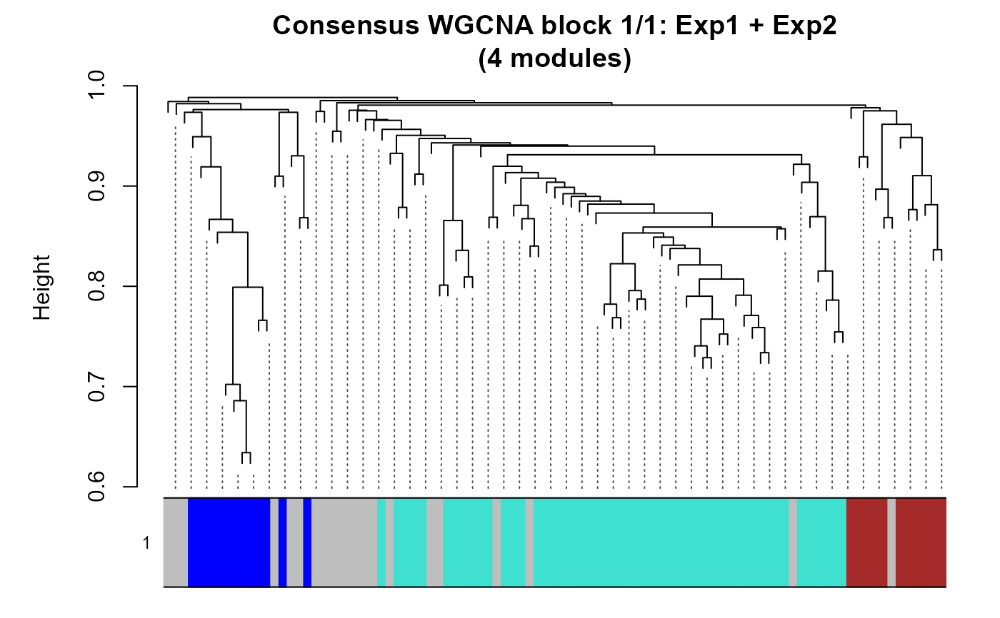

Run blockwise consensus WGCNA on more than one dataset sharing a common feature ID space.
Usage
run_consensus_WGCNA(
nets,
powers,
consensusQuantile = 0,
numericLabels = TRUE,
plot = TRUE,
...
)Arguments
- nets
A named list of WGCNA input objects (output from
prepare_WGCNA).- powers
A named numeric vector of soft-thresholding powers to be used in
WGCNA::blockwiseConsensusModules(). Values may be selected based on the output of prepare_WGCNA(). Names must match names ofnets.- consensusQuantile
Quantile at which consensus is to be defined. (default: 0). See
WGCNA::blockwiseConsensusModules()for details.- numericLabels
Whether to use numeric labels for modules in the output (default is TRUE).
- plot
Logical. If TRUE (default), plot consensus dendrogram with module colours for each feature block via
WGCNA::plotDendroAndColors().- ...
Additional parameters to be passed to
WGCNA::blockwiseConsensusModules. The network type is inherited fromnets, and anetworkTypepassed via...is accepted only if it matches the value stored innets.
Value
A list with elements: network (the consensus result),
multiExpr (the input multi-expression list),
common_features (features shared across all datasets),
names (dataset names), and parameters.
Examples
data(example_obj)
data(example_obj_2)
shared_features <- intersect(
rownames(example_obj), rownames(example_obj_2)
)
inp1 <- prepare_WGCNA(example_obj[shared_features, , drop = FALSE],
powers = seq(1, 20), assay = 2, networkType = "signed")
#> Allowing multi-threading with up to 24 threads.
#> pickSoftThreshold: will use block size 95.
#> pickSoftThreshold: calculating connectivity for given powers...
#> ..working on genes 1 through 95 of 95
#> Power SFT.R.sq slope truncated.R.sq mean.k. median.k. max.k.
#> 1 1 0.805 3.870 0.845 49.700 50.400 57.70
#> 2 2 0.068 -0.328 0.119 28.800 29.100 39.90
#> 3 3 0.683 -1.350 0.631 17.900 17.500 29.60
#> 4 4 0.711 -1.160 0.781 11.800 10.900 22.90
#> 5 5 0.713 -1.100 0.792 8.070 7.300 18.20
#> 6 6 0.816 -1.200 0.922 5.740 4.960 14.80
#> 7 7 0.834 -1.120 0.933 4.210 3.440 12.20
#> 8 8 0.746 -1.220 0.749 3.160 2.430 10.20
#> 9 9 0.815 -1.200 0.878 2.430 1.840 8.67
#> 10 10 0.844 -1.230 0.879 1.900 1.500 7.40
#> 11 11 0.792 -1.240 0.775 1.510 1.230 6.37
#> 12 12 0.830 -1.250 0.840 1.220 0.989 5.53
#> 13 13 0.886 -1.330 0.914 0.991 0.743 4.83
#> 14 14 0.871 -1.280 0.891 0.816 0.562 4.24
#> 15 15 0.859 -1.230 0.873 0.678 0.430 3.74
#> 16 16 0.862 -1.280 0.857 0.568 0.337 3.32
#> 17 17 0.124 -1.960 -0.111 0.480 0.258 2.96
#> 18 18 0.127 -2.020 -0.106 0.408 0.208 2.65
#> 19 19 0.863 -1.300 0.835 0.349 0.168 2.39
#> 20 20 0.861 -1.280 0.828 0.300 0.131 2.15
#> WGCNA powerEstimate: 1 (unsigned SFT.R.sq > 0.8); custom_powerEstimate: 6 (signed R-squared > 0.8).
inp2 <- prepare_WGCNA(example_obj_2[shared_features, , drop = FALSE],
powers = seq(1, 20), assay = 2, networkType = "signed")
#> Allowing multi-threading with up to 24 threads.
#> pickSoftThreshold: will use block size 95.
#> pickSoftThreshold: calculating connectivity for given powers...
#> ..working on genes 1 through 95 of 95
#> Power SFT.R.sq slope truncated.R.sq mean.k. median.k. max.k.
#> 1 1 0.635 5.260 0.8170 49.0000 49.8000 55.700
#> 2 2 0.210 1.230 0.6400 27.5000 27.7000 35.800
#> 3 3 0.251 -0.754 0.1040 16.3000 16.3000 24.400
#> 4 4 0.472 -0.942 0.3910 10.2000 9.8500 17.200
#> 5 5 0.568 -1.050 0.4760 6.5900 6.0700 12.500
#> 6 6 0.534 -0.954 0.4630 4.4200 3.8300 9.340
#> 7 7 0.704 -0.941 0.7010 3.0500 2.5400 7.090
#> 8 8 0.783 -0.926 0.7700 2.1500 1.7500 5.460
#> 9 9 0.762 -1.010 0.7120 1.5500 1.2100 4.260
#> 10 10 0.657 -1.100 0.5910 1.1400 0.8130 3.350
#> 11 11 0.712 -1.130 0.6510 0.8500 0.5960 2.660
#> 12 12 0.178 -3.030 0.0364 0.6430 0.4430 2.130
#> 13 13 0.773 -1.030 0.7330 0.4920 0.3320 1.720
#> 14 14 0.812 -1.050 0.8000 0.3810 0.2430 1.400
#> 15 15 0.822 -1.040 0.7970 0.2970 0.1770 1.150
#> 16 16 0.827 -1.070 0.7830 0.2340 0.1330 0.944
#> 17 17 0.787 -1.080 0.7370 0.1860 0.0979 0.782
#> 18 18 0.781 -1.080 0.7250 0.1490 0.0756 0.650
#> 19 19 0.951 -1.000 0.9370 0.1200 0.0564 0.543
#> 20 20 0.983 -0.973 0.9800 0.0975 0.0431 0.456
#> WGCNA powerEstimate: 14 (unsigned SFT.R.sq > 0.8); custom_powerEstimate: 14 (signed R-squared > 0.8).
cons <- run_consensus_WGCNA(
nets = list(Exp1 = inp1, Exp2 = inp2),
powers = c(Exp1 = 8, Exp2 = 8),
minModuleSize = 10
)
#> Common features across 2 datasets: 95
#> Exp1: 95 features
#> Exp2: 95 features
#> Running blockwise consensus WGCNA...
#> Allowing multi-threading with up to 24 threads.
#> Calculating consensus modules and module eigengenes block-wise from all genes
#> Calculating topological overlaps block-wise from all genes
#> Flagging genes and samples with too many missing values...
#> ..step 1
#> ....Working on set 1
#> TOM calculation: adjacency..
#> ..will not use multithreading.
#> Fraction of slow calculations: 0.000000
#> ..connectivity..
#> ..matrix multiplication (system BLAS)..
#> ..normalization..
#> ..done.
#> ....Working on set 2
#> TOM calculation: adjacency..
#> ..will not use multithreading.
#> Fraction of slow calculations: 0.000000
#> ..connectivity..
#> ..matrix multiplication (system BLAS)..
#> ..normalization..
#> ..done.
#> ..Working on block 1 .
#> ....Working on set 1
#> ....Working on set 2
#> ....Calculating consensus network
#> ..Working on block 1 .
#> ....clustering and detecting modules..
#> ....calculating eigengenes..
#> ....checking consensus modules for statistical meaningfulness..
#> ....checking for genes that should be reassigned..
#> ..merging consensus modules that are too close..
#> mergeCloseModules: Merging modules whose distance is less than 0.15
#> Calculating new MEs...
#> Consensus WGCNA complete.
